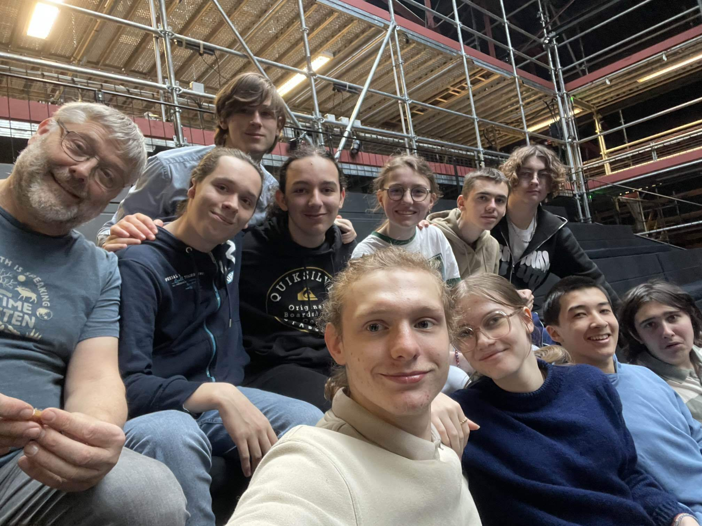

Le mardi 07 Janvier, nous nous sommes rendus au Bercail et nous y avons passé la journée. Nous avons participé à différentes activités autour du théatre avec un groupe venant du lycée du Noordover.
Le matin, nous avons travaillé avec Stéphanie Chêne, chorégraphe pour Le Ring de Katharsy
.
Nous avons commencé par apprendre à utiliser et déplacer notre corps comme des PNJ
-des Personnages Non Joueurs.
Nous avons d'abord commencé par danser en apprenant au fur et à mesure la façon dont ces PNJ bougeaient et en ajoutant
des nouvelles contraintes à chaque fois.

Ensuite, nous avons réalisé des activités pour apprendre à nous déplacer en marchant et en courant comme des PNJ, toujours sous la tutelle de Stéphanie: elle nous a donné des conseils pour améliorer notre technique de déplacement.

L'après-midi, nous avons mis en pratique les techniques que nous avons appris le matin même. Nous avons commencé par créer une petite mise en scène en groupes de 5. J'étais avec Perrine, Clément, Ella et Lucas. Nous avions une dixaine de gobelets à disposition, ainsi que des tables et des chaises.

Notre scène était assez simple: Tout le monde rentrait sur scène et s'installais à table. Lucas ramenait
ensuite des gobelets, que nous devions empiler un par un. Mais petit problème: Moi et Ella étions tous les deux buggués
.
Ella n'arrivais pas à s'assoir, tandis que j'étais coincé dans une boucle à me lever et me rassoir dans ma chaise. Après avoir
réussi à empiler tous les gobelets, tout le monde sauf Ella sort de scène. Apparaissant enfin comprendre le but du jeu, elle
se rapproche des gobelets, mais d'un geste brusque fait tout tomber. Elle sort de scène.

Nous avons ensuite participé à plusieurs joutes
verbales et physiques. Deux micros étaits disposés
sur scène, un de chaque côté. Nous allions ensuite, par groupes de 6 ou 7 se placer de chaque côté de la scène, avec les micros.
Un joueur
de chaque groupe était désigné pour aller se placer au micro. Son rôle était alors de nous controller avec des sons.
Lors des joutes physiques, nous devions effectuer des coups et réagir de manière proportionnée aux sons lancés par notre joueur.
Dans les joutes verbales, les joueurs lançaient des insultes gentilles
à l'équipe adverse et nous devions transcrire ces
insultes à travers nos gestes.

Enfin, par groupes de 4, cette fois mélangés avec les élèves du Noordover, nous avons créé une deuxième mise
en scène. Celle-ci était plus inspirée du Ring de Katharsy: deux membres du groupe étaient joueurs, et les deux autres étaient
PNJ. Tout comme dans le Ring, les joueurs controllaient les PNJ avec des injonctions simples, telles que Marche!
, ou
Attrape!
. Nous avons simplement effectué une recette simple de pâte à crêpes, mais avec des PNJ quelque peu têtus.
J'étais un PNJ avec une élève du Noordover, tandis que Samuel et une autre élève du Noordover nous controllaient.